Featured
 Municipal Boundary Map
Municipal Boundary Map Special Districts Map
Special Districts Map Age Animation
Age Animation Query Data
Query Data
Census and American Community Survey
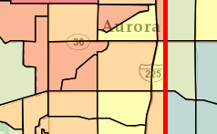ACS '07-'11 vs 2000 Census SF3
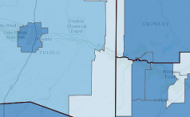Health Insurance Coverage
Population
 Population Change:
Population Change:
Births, Deaths, and Migration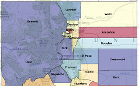Historic Colorado Population
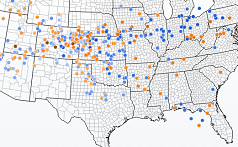Inter-State Migration 06-10
 Animated Population Chart
Animated Population Chart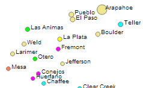Colorado County Population
Economic
 Unemployment Map
Unemployment Map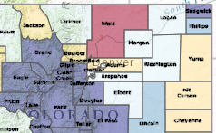Oil, Natural Gas, CO2 Production
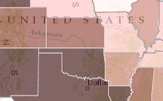Oil and Natural Gas Production by State
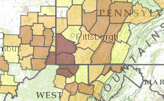State and County Coal Production
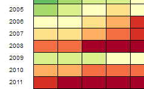Retail Gasoline Prices
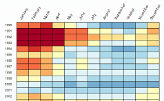US County/Metro Unemployment
Income and Poverty
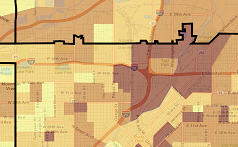Household Poverty, 2007-2011 ACS
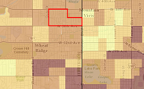Individual Poverty, 2007-2011 ACS
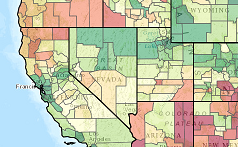National: SAIPE - Income & Poverty
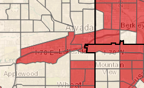Low & Moderate Income (HUD FY 2014)
Other
 RUCA Urban-Rural Map
RUCA Urban-Rural Map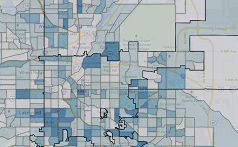CDHS: SNAP - Underserved Areas
 Population and Housing Density
Population and Housing Density